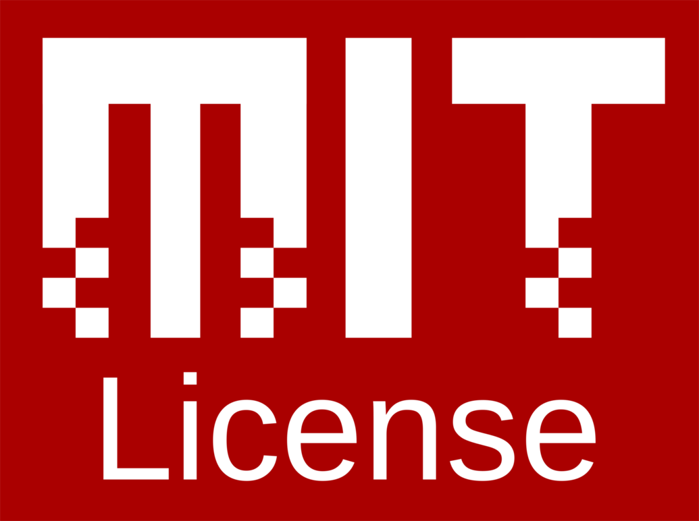

Cerita Tentang Sistem Operasi Haiku dan Lisensi MIT
Artikel ini merupakan bagian dari Proyek Besut Kode.
Keberadaan artikel ini bukan merupakan pernyataan dukungan terhadap pihak manapun, aktivitas atau tujuan-tujuan apapun yang terkait dengan proyek tersebut.

Haiku pada awalnya adalah sebuah proyeks sistem operasi terbuka bernama BeOS yang terhenti pengembangannya akibat akusisi Be Inc oleh Palm Inc pada tahun 2001. Kejadian ini menyebabkan para pengguna BeOS kehilangan sumber pemutakhiran dan para pengembangnya tertahan karena ketiadaan perangkat pendukung sistem operasi tersebut. Akhirnya, banyak dari pengguna BeOS berinisiatif untuk turut serta mengembangkan sistem operasi ini ke berbagai versi. Dari inisiatif tersebut muncul nama-nama seperti Cosmoe atau BlueEyesOS. Di antara banyak hasil kembangan, yang paling sukses ialah OpenBeOS, di mana hampir keseluruhan sistem ditulis ulang dan sumber kode sistem operasi tersebut diurus supaya kompatibel dengan banyak perangkat lunak.
OpenBeOS secara resmi diterbitkan pada tahun 2002. Sistem operasi yang diterbitkan pada tahun tersebut ialah versi buatan para kontributor yang merupakan versi terbaru dan terbuka untuk BeOS 5.0.3. Dengan tetap berjalannya proyek ini, nama baru ditentukan secara demokratis oleh para pengguna sistem operasi ini dalam helatan Walter Con. Nama sistem operasi ini berubah menajdi Haiku untuk menghindari risiko sengketa hak atas mereka dagang sistem operasi ini yang kini dipegang oleh Palm Inc. Haiku kemudian diresmikan menjadi sebuah organisasi nirlaba bernama Haiku Inc pada tahun 2001 oleh Michael Phipps untuk mendukung keberlanjutan sistem operasi ini.
Tahukah Anda?

Sistem operasi Haiku menganut asas keterbukaan dengan menerapkan lisensi terbuka untuk perangkat lunak dari MIT.
Ketentuan lisensi ini mengizinkan setiap pengguna perangkat lunak untuk:
-
Mengakses dan mengambil kopi dari perangkat lunak beserta data dokumentasinya;
-
Memanfaatkan perangkat lunak beserta data dokumentasinya untuk digandakan, dimodifkasi, digabungkan, disebarluaskan, dilisensikan kembali, digunakan dalam kepentingan komersial, dan memperbolehkan pengguna lain untuk mendapatkan akses terhadap perangkat lunak beserta data dokumentasinya tanpa pembatasan;
Dengan syarat:
“Setiap pengguna ciptaan wajib mencantumkan pemberitahuan hak cipta ini pada semua kopi atau bagian substansial perangkat lunak yang digunakan”
Lalu, pada bagian menutup lisensi ini menegaskan bahwa:
Setiap ketentuan lisensi ini disediakan dengan apa adanya. Ketentuan lisensi ini tidak menjamin atau menyatakan dukungan, secara tersurat maupun tersirat, terhadap kemungkinan diperdagangkan, penggunaan untuk tujuan yang bertentangan, dan adanya pelanggaran terhadap perangkat lunak. Penyedia lisensi tidak turut bertanggung jawab pada setiap klaim, kerusakan atau tanggung jawab atas hal-hal baik tertulis maupun tidak tertulis, kerugian atau keuntungan, yang berasal dari atau berhubungan dengan perangkat lunak yang menerapkan lisensi ini atau segala bentuk penggunaan perangkat lunak ini.
Prinsip keterbukaan ini lah yang menyebabkan sistem operasi ini masih berjalan dan terus dibangun oleh pengguna-penggunanya yang setia. Semua bermula dengan bekal awal keterbukaan dan kemungkinan pengembangan yang menarik. Sistem operasi ini juga menjadi salah satu tantangan tugas untuk kompetisi Google Code-In dengan tingkat penyelesaian tugas sebanyak 182 tugas. Dengan menerapkan prinsip keterbukaan dan kemauan berkontribusi, sebuah ciptaan akan memperoleh kesempatan untuk terlibat dalam hal-hal yang tidak pernah dibayangkan sebelumnya.
Mulailah berkontribusi!
Bisa Anda mulai dari hal-hal kecil seperti ikut serta menerjemahkan teks lisensi MIT di laman Git ini atau dengan menerjemahkan dan memperkaya artikel Wikipedia tentang Haiku ke bahasa Indonesia!
Sebarkan!
Tags:
Oleh: Creative Commons Indonesia
12 Dec 2017Kategori:
Berita Terbaru
- Lokakarya Hak Cipta dan Lisensi Creative Commons di Pekanbaru
- Pengumuman Resmi: Hasil Akhir Training of Trainers Creative Commons Indonesia
- Literatur tentang Model Bisnis Terbuka "Made With CC"
- Data dan Artikel Ilmiah Terbuka dari PLOS!
- Konten Format Model 3 Dimensi Berilsensi CC di Platform Sketchfab